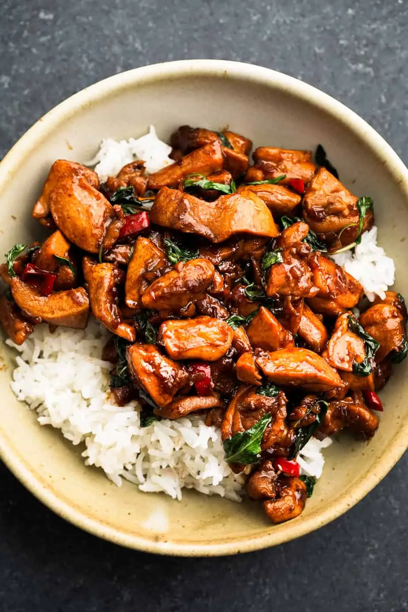

Spicy Thai basil Chicken

Description
Spicy Thai Basil Chicken is a flavorful and aromatic dish that combines tender chicken with fragrant Thai basil and spicy chilies. The chicken is stir-fried with garlic, onions, and bell peppers, then seasoned with fish sauce, soy sauce, and sugar for a balance of savory and sweet flavors. Fresh Thai basil leaves are added at the end of cooking for a burst of fresh herb flavor. The dish is typically served over rice and garnished with sliced chilies for an extra kick of heat. It’s a delicious and satisfying meal that’s perfect for spice lovers.
Ingredients
- Sauce:Chicken broth, oyster sauce, soy sauce, fish sauce, white sugar, and brown sugar are whisked together to make a sweet and salty mixture to flavor the recipe.
- Chicken:Chef John minces skinless, boneless chicken thigh until they're very finely chopped. You could use packaged ground chicken to speed up the process, but chopping or grinding your own gives you superior flavor and texture.
- Shallots and garlic:Sliced shallots and minced garlic add another layer of flavor.
- Hot chile peppers:This is where the heat comes into play. Use Thai chile, serrano chile, or other hot pepper of your choice, and customize the amount to suit your tolerance for heat.
- Basil:This recipe traditionally uses Thai basil or "holy" basil, which have their own distinctive flavors. Chef John uses sweet basil, which is more readily available in most grocery stores. In the recipe video, Chef John demonstrates how he stacks and rolls basil leaves like a cigar to quickly slice thin ribbons that cook faster and impart flavor throughout the dish.
Steps
- Prep all the ingredients before you start cooking. This should take about 15 minutes.
- Add oil and minced chicken to a smoking-hot skillet and cook for a couple of minutes.
- Add shallots, garlic, and sliced chilies to the skillet and cook for another couple of minutes.
- Add about a tablespoon of the sauce to the skillet and cook for a minute until it starts to caramelize. Then add the rest of the sauce, scraping up the caramelization and coating the chicken for another minute.
- Remove the skillet from heat and stir in the basil until it wilts from the residual heat. Your Thai Basil Chicken is now ready to serve.